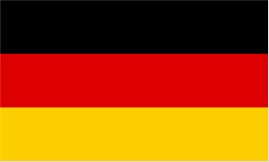
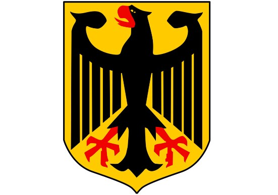
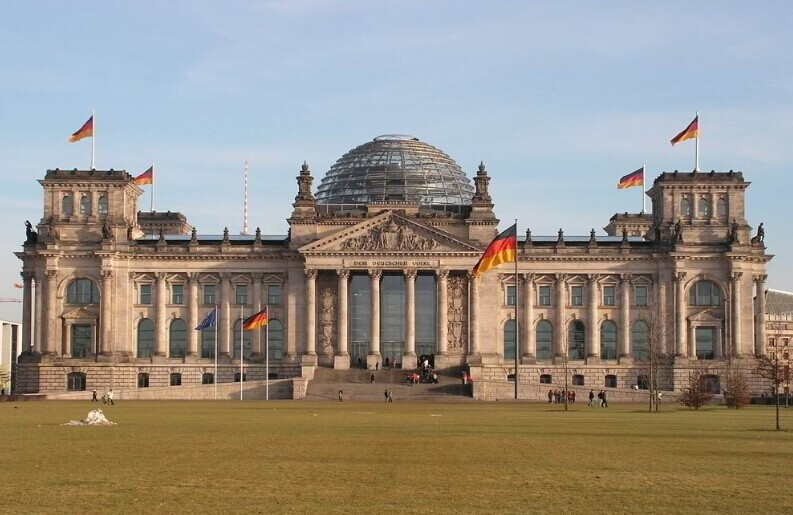
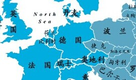

- 德国国旗
- 德国国徽
- 德国标志性建筑
- 德国地理位置
德国概况
德国位于欧洲西部, 东邻波兰、捷克, 南接奥地利、瑞士, 西接荷兰、比利时、卢森堡、法国, 北与丹麦相连并邻北海和波罗的海与北欧国家隔海相望。
人口概况
约8200万, 主要是德意志人, 有少数丹麦人和索布族人。有725.6万外籍人, 占人口总数的8.8%。通用德语。居民中30%信奉新教, 31%信奉罗马天主教。德语为通用语言。
德国经济
按国际汇率计算，德国为世界第4大经济体，以购买力平价计算则为世界第5大经济体。于2011年，德国为欧盟预算最大出资国。服务业约占德国国内生产总值高达71%，而工业与农业则分别占28%及1%。德国于2012年5月时失业率为6.7%。
德国是世界贸易大国，同230多个国家和地区保持贸易关系。德国产品以品质精良著称，技术领先，做工细腻，但成本较高。德国出口业素以质量高、服务周到、交货准时而享誉世界。主要出口产品有汽车、机械产品、化学品、通讯技术、供配电设备和医学及化学设备。主要进口产品有化学品、汽车、石油天然气、机械、通讯技术和钢铁产品。主要贸易对象是西方工业国，其中进出口一半以上来自或销往欧盟国家。
德国的出口额2003年之后，连续六年保持世界第一出口大国地位。外贸长期顺差，2007年德国出口额达9691亿欧元。以企业营业额排名的财富世界500强排行榜中，有32家企业的总部设于德国。德国DAX指数则由30家市值最大的德国公司组成。德国具备专业技术的中小型企业也相当重要，约有1000家此类企业在各领域居领先地位而被认为是隐形冠军。2013年德国国内生产总值27376亿欧元，增长率0.4%，人均国内生产总值32280欧元。国民总收入21188亿欧元。
外交关系
欧盟建设和跨大西洋伙伴关系是德外交政策两大支柱。德积极参与解决地区热点问题, 愿在国际事务中承担更大责任, 成为欧洲及全球范围内有行动能力、可信赖的合作伙伴。主张建立以联合国为主导的全球合作体系, 致力于和平解决国际争端, 共同打击国际恐怖主义, 促进国际贸易自由化和全球化的公正发展, 努力在全球范围内解决贫困问题。
经贸往来
德国是世界贸易大国, 同230多个国家和地区保持贸易关系。德国出口业素以质量高、服务周到、交货准时而享誉世界。主要出口产品有汽车、机械产品、化学品、通讯技术、供配电设备和医学及化学设备。主要进口产品有化学品、汽车、石油天然气、机械、通讯技术和钢铁产品。主要贸易对象是西方工业国, 其中进出口一半以上来自或销往欧盟国家。